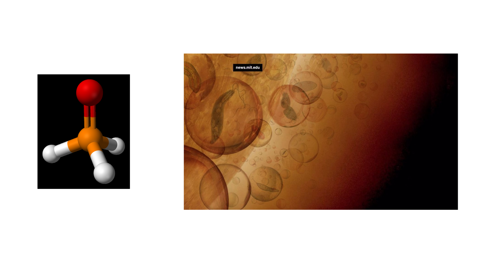
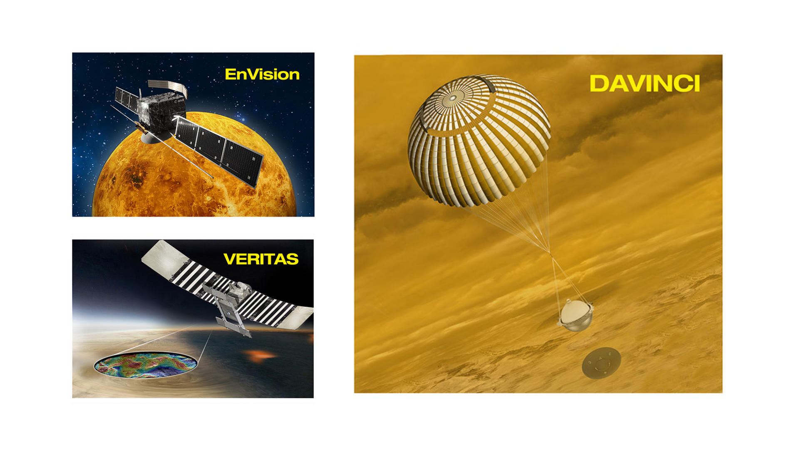
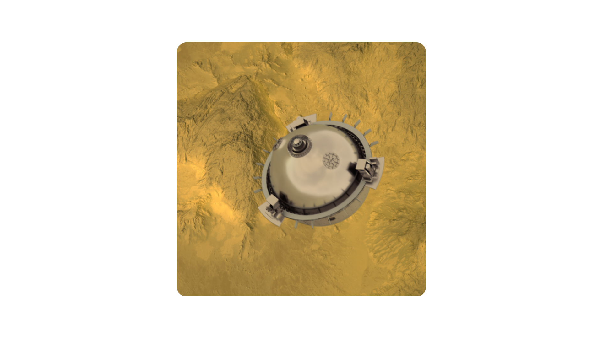

Planeta Venus
Presentado por Natalia Ramirez y Santiago Urbano
Contenido
Ejes de rotacion planetas
Relación entre el período de la órbita de la tierra y de venus
¿Por que Venus y la Tierra son tan diferentes?
La tierra y venus ..empezaron siendo gemelos y en algun momento de sus vidas la tierra y venus tomaron caminos diferentes.
Si venus tuvo oceanos seria algo parecido a esto
¿Hay nieve en venus?

¿Fosfano en venus?
Datos que necesitan ser confirmados
Los resultados son puramente teóricos
y se espera que las futuras misiones espaciales a Venus puedan aportar más luz para ayudar a corroborar o refutar estos datos.
Las tres futuras misiones espaciales de Venus serán esenciales para confirmar o refutar
¿Cuales son las 3 misiones para desvelar los misterios de Venus?
Veritas, DAVINCI+ y EnVision
DAVINCI+
- DAVINCI+ recolectara datos sobre la atmósfera de Venus y contará con un novedoso instrumento para tomar imágenes de alta resolución en el ultravioleta.
- Su lanzamiento está previsto para el año 2030 
VERITAS
- Esta mision es, en la práctica, la sucesora de Magallanes.
- Su objetivo es elaborar mapas topográficos y geológicos detallados de Venus

EnVision
- Sera lanzada a principios de los 30 y tendrá con tres instrumentos principales: un radar de apertura sintética Venus, un radar de sondeo de subsuelo venusiano, y un espectroscopio de tres canales para analizar tipos de rocas y de la actividad volcánica

Conclusiones
- Cuanto más brille el sol más seguirá la tierra el camino de venus, es por ello que estudiar y aprender de venus talvez nos salve del mismo terrible destino
- Además, en las últimas décadas se han descubierto decenas de mundos parecidos a la Tierra en términos de masa y tamaño. Pero, ¿se trata de exotierras o de exovenus? ¿Cómo distinguirlos si no conocemos todos los detalles de nuestro vecino?
Referencias
- Tres misiones para desvelar los misterios de Venus. (2022). Recuperado el 23 Abril del 2022, de Investigacionyciencia
- La NASA vuelve a Venus. (2022). Recuperado 23 Abril 2022 de Investigacionyciencia
- Por qué la NASA decidió volver a investigar Venus, el planeta que es "como un infierno" pese a sus similitudes con la Tierra - BBC News Mundo. (2021). Retrieved 23 Abril 2022, de bbc.com